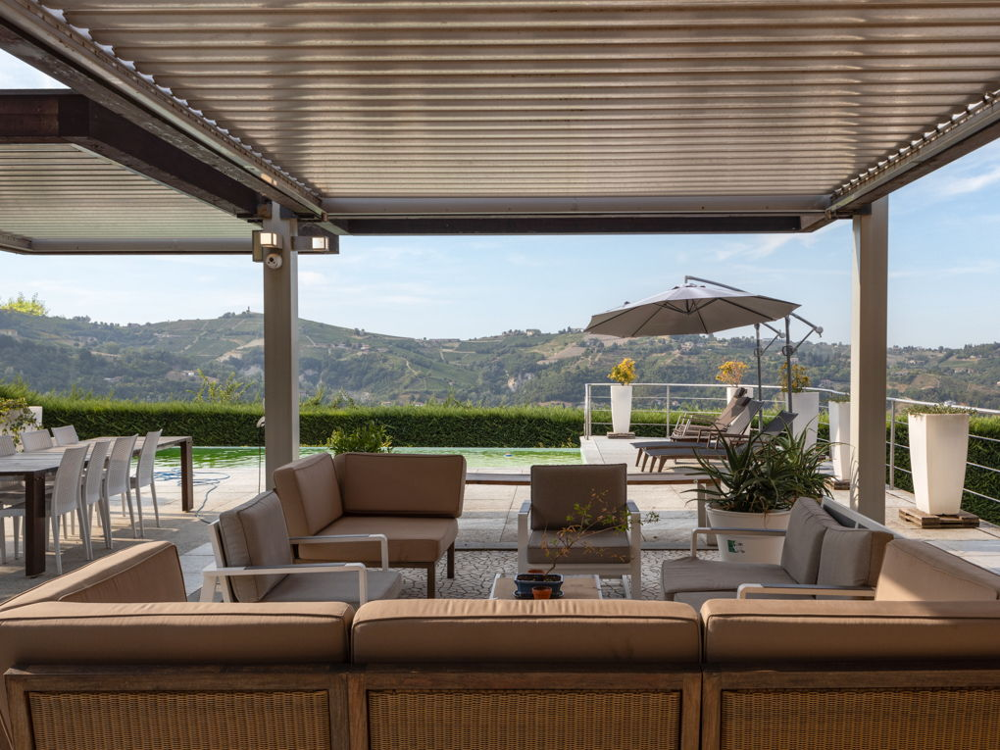

€950.000
Canelli (UNESCO core zone, ~5 min from town centre) · Piedmont · Italy
Brand-new overnight E&V Asti-Monferrato listing: 1920 hillside villa mixing natural stone / stone fireplace / fieldstone terrace pillars with contemporary finishes, plus a verified built private heated saltwater infinity pool - habitable now, design-forward character rather than wreck or sleek-only box.
Opened 1 Oct 2026 on Engel & Völkers Asti-Monferrato expose; asking €950.000; ref W-02NF3Q; uuid 1df46b5e-e1a4-578c-bc75-52926640a830; datePosted 2026-10-01T08:34:54Z; 4 beds / 4 baths; 465 m² total; plot 1.800 m² (garden 1.600); terrace 32 m²; PV + battery storage; underfloor heating; pellet boiler; 2 garages (4 cars); artesian well irrigation. Brand-new vs 30 Sep under-cap set. Interiors include designer kitchen (more contemporary) but living room stone column / fireplace and exterior fieldstone pillars read as old+new. Not a bargain at €950k.
View listing